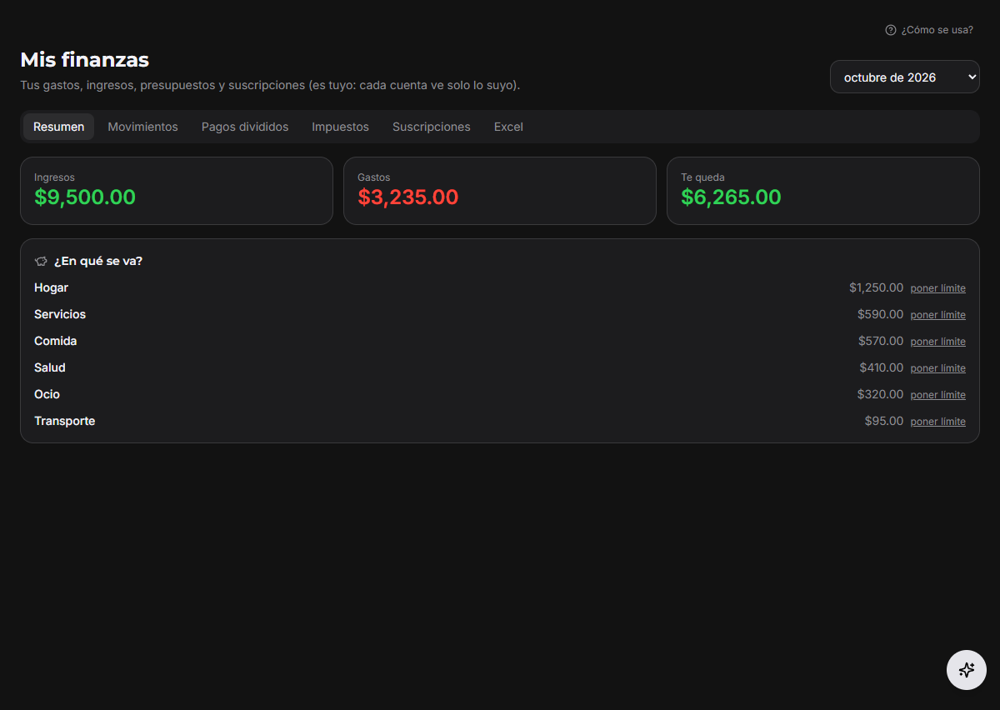
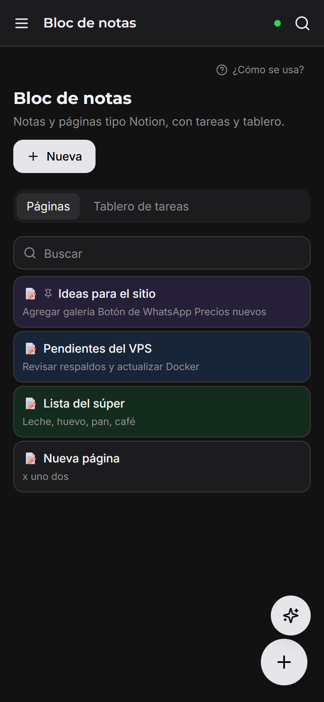
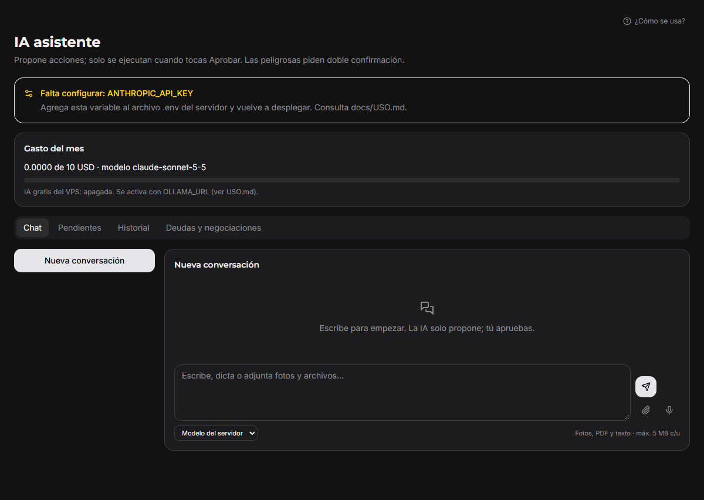
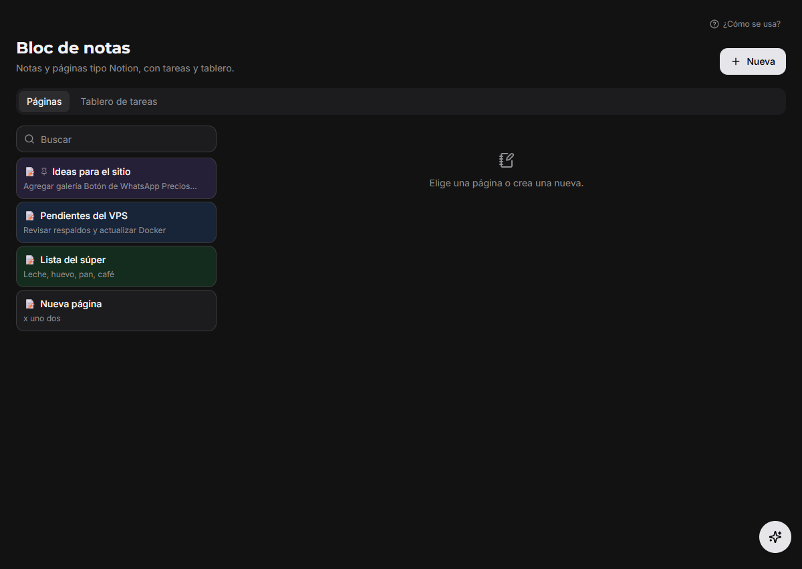
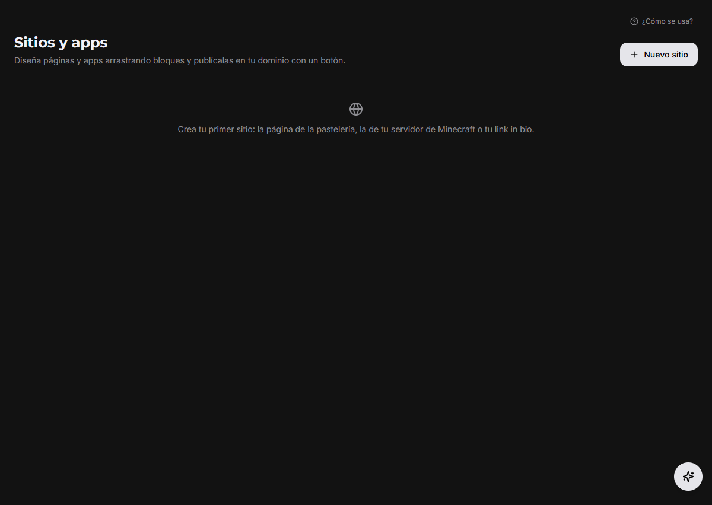
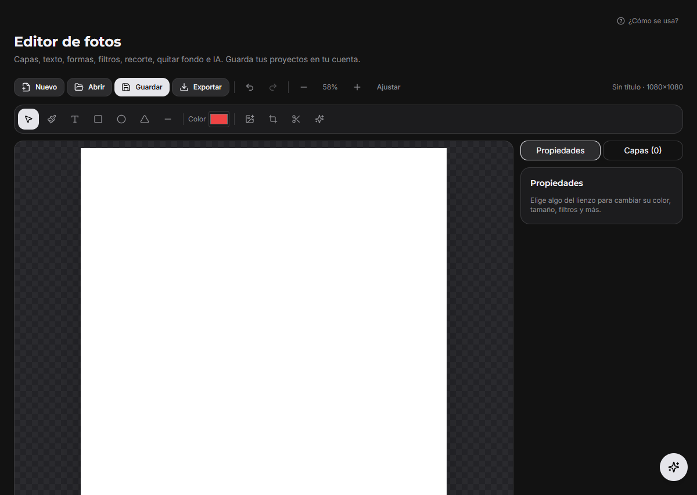
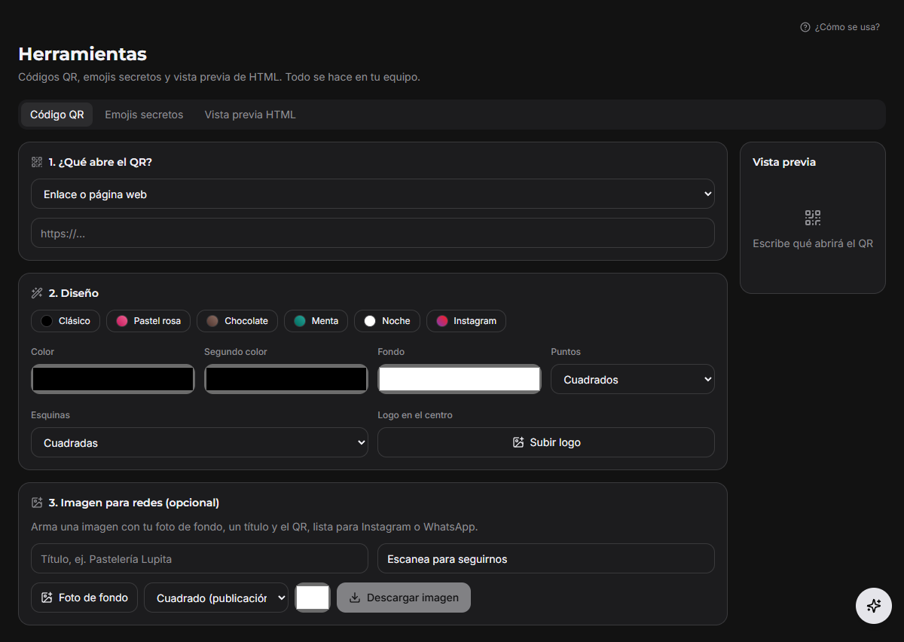
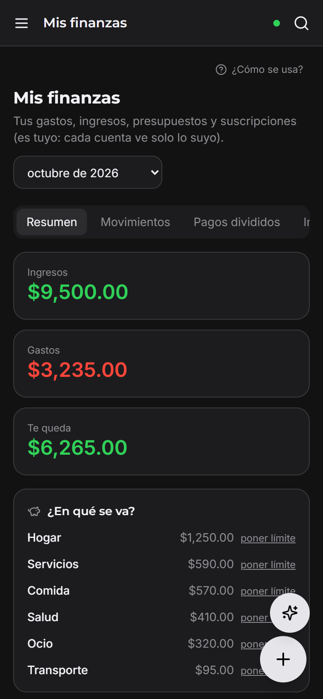

Demo en vivo
Una copia de la app con datos de ejemplo, separada de cualquier VPS real. Se actualiza sola con cada versión nueva y nada de lo que hagas se guarda. Toca un apartado:
Mi Setup se instala en tu propio VPS y lo usas desde la PC, el celular o el navegador: terminal, archivos, sitios web, finanzas, notas e IA. Tus datos se quedan contigo.
🤖 Hecho con IA · Esta es la página oficial


Corre en tu VPS. Contraseñas cifradas, 2FA, huella y avisos de inicio de sesión.
App de Windows, app de Android y navegador, todo sincronizado.
La IA te ayuda, pero nada se ejecuta sin que toques Aprobar.
Código en GitHub con licencia MIT. Mejóralo y compártelo.
Cada persona ve solo los apartados que le das en Cuentas y permisos.
Terminal, rendimiento, alertas de caída, comandos aprobados, archivos, seguridad y respaldos.
Editor visual, dominio propio, DNS automático en Cloudflare, pedidos, cuentas y estadísticas.
Claude, modelos gratis en tu VPS y agentes. Solo propone: tú apruebas.
Gastos con foto del ticket, suscripciones, pagos divididos, impuestos y rendimientos.
Notas con fotos, voz y dictado, recordatorios, tareas y calendario.
Bóveda cifrada, códigos 2FA y autocompletado en Android.
Filtraciones de tu correo, correos peligrosos y avisos de inicio de sesión.
Editor de fotos y video, convertidor, PDF, firma y códigos QR.
Canales con fotos, archivos, código y notas de voz.
Capturas reales de la app.
Mis finanzas

IA asistente

Bloc de notas

Sitios y apps

Editor de fotos

Herramientas

Finanzas en el celular
Notas en el celular
La versión nueva y las 2 anteriores. Descarga solo desde esta página o desde el GitHub oficial.
Para tenerla encendida 24/7 necesitas un VPS. También puedes instalarla en tu PC, pero solo funciona mientras la PC esté prendida y conectada.
2 vCPU · 4 GB RAM · 40 GB de disco · Ubuntu · Docker
4 vCPU · 8 GB RAM · 100 GB de disco (para la IA gratis y los respaldos)
Un dominio con DNS en Cloudflare (gratis) para el HTTPS y los sitios.
Contabo · Ubuntu 22.04 · 96.7 GB de disco
Disco usado · 22.9 %
Memoria usada · 14 %
setup.tudominio.com a la IP del VPS.git clone https://github.com/dupeosserver-bit/Mi-setup.git /opt/mi-setup/app cd /opt/mi-setup/app && sh deploy/instalar.sh
https://setup.tudominio.com, crea tu cuenta y activa el 2FA.Una copia de la app con datos de ejemplo, separada de cualquier VPS real. Se actualiza sola con cada versión nueva y nada de lo que hagas se guarda. Toca un apartado:
Versiones mejoradas de Mi Setup hechas por la comunidad. ¿Hiciste la tuya? Súbela y etiqueta a @JokeerYT_Oficia en X.
Tema oscuro nuevo y widgets en el inicio.
Agrega rendimientos de bancos argentinos.
Antes de publicarse, cada archivo se revisa con antivirus y lo aprueba el autor. Los comentarios con insultos o groserías se bloquean. El nombre «JokeerYT» está reservado.
Enviar a revisión